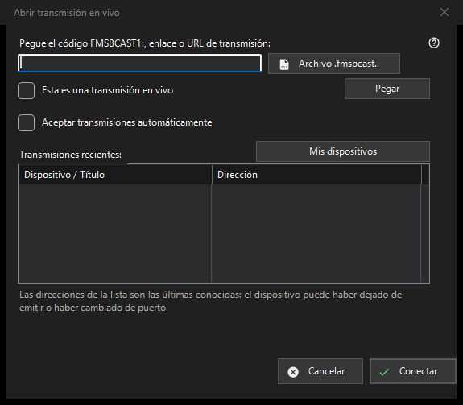

Emisión en directo
Para qué sirve
Pega un código FMSBCAST1:, enlace o URL del flujo, o elige un archivo .fmsbcast. Marca una URL normal como directo solo si es una fuente en vivo; de lo contrario se abre bajo demanda. Pulsa Conectar e introduce la contraseña del espectador si se solicita. Una dirección reciente puede fallar cuando el emisor se detiene o cambia de puerto. La aceptación automática de Cast es una elección explícita independiente.


En este orden
Pega un código FMSBCAST1:, enlace o URL del flujo, o elige un archivo .fmsbcast. Marca una URL normal como directo solo si es una fuente en vivo; de lo contrario se abre bajo demanda. Pulsa Conectar e introduce la contraseña del espectador si se solicita. Una dirección reciente puede fallar cuando el emisor se detiene o cambia de puerto. La aceptación automática de Cast es una elección explícita independiente.
Los elementos
FMSBCAST1: / .fmsbcast
Pega un código FMSBCAST1:, enlace o URL del flujo, o elige un archivo .fmsbcast. Marca una URL normal como directo solo si es una fuente en vivo; de lo contrario se abre bajo demanda. Pulsa Conectar e introduce la contraseña del espectador si se solicita. Una dirección reciente puede fallar cuando el emisor se detiene o cambia de puerto. La aceptación automática de Cast es una elección explícita independiente.
Ajustes del gestor · Ajustes de uso compartido SFTP · Ajustes del servidor de intercambio